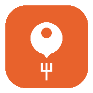

即席グルメMAPジャンル・予算・徒歩距離を選んで検索するだけ。現在地から近いおすすめのお店を、地図とリストの両方でチェックできます。アプリのインストールや会員登録は不要です。
🍜 アプリを起動する できることを見る「今すぐ、近くで、この条件で」を最短で
位置情報を許可するだけで、今いる場所を中心に周辺のお店を探します。住所の入力は不要です。
食べたいジャンル、予算の範囲、徒歩5〜25分の距離を選んで、条件に合うお店だけを表示します。
検索結果はおすすめ順に並ぶので、上から見ていくだけで候補を絞り込めます。
リストをタップすると地図上の対応するピンが中心に表示され、場所の距離感が一目で分かります。
実際のアプリのデザインを再現したイメージです
むずかしい設定は不要です
ネイティブアプリのように使えます